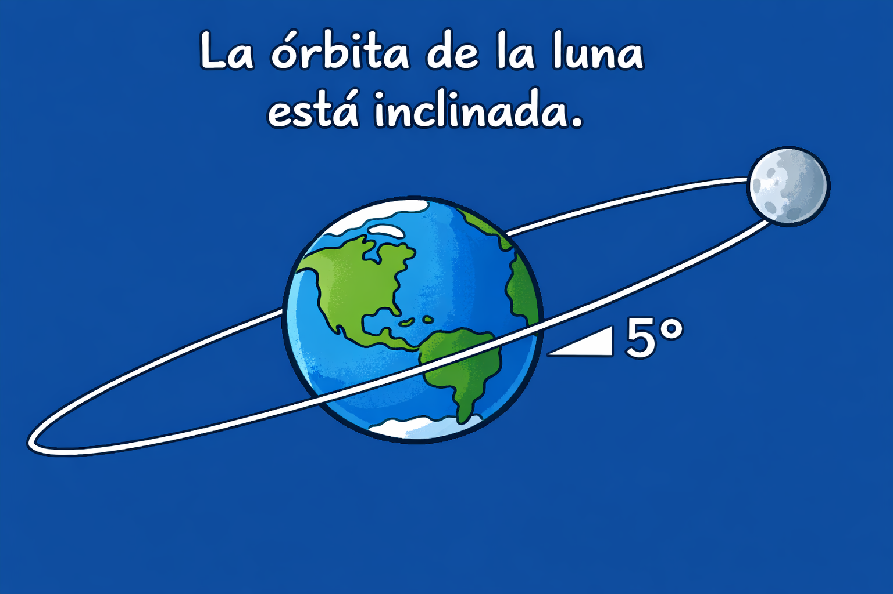
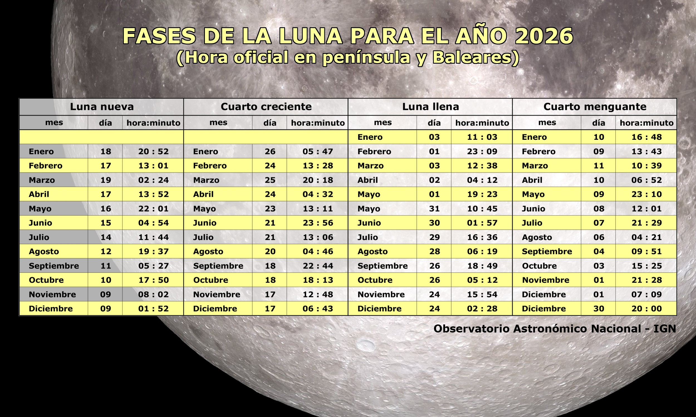

La Luna es nuestro satélite natural y el objeto astronómico más cercano a nuestro planeta (la distancia media entre los dos astros es tan solo de 384000 km). El período de rotación de la Luna dura lo mismo que el de traslación (aproximadamente unos 28 días), lo que hace que siempre nos muestre la misma cara y que haya una cara oculta vista desde la Tierra
Movimientos de la Luna. La órbita de la Luna
La Luna tiene dos movimientos fundamentales. Uno de giro sobre su eje y otro de translación alrededor de la Tierra.
- Gira alrededor de la Tierra en sentido antihorario y siguiendo una órbita elíptica, por lo que la distancia de la Luna a la Tierra varía, siendo máxima en el apogeo y mínima en el perigeo. Cuando aparece una luna llena en su perigeo, es un poco más brillante y más grande que una luna llena normal, y así es como tenemos una “superluna".
- Gira sobre su propio eje. con un período de rotación igual al de traslación (aproximadamente unos 28 días),.
En esta animación de la NASA, podéis ver los efecto que produce esa sincronización:
- Desde la Tierra, la Luna se nos presenta como un disco cuya iluminación va variando, son las fases de la luna
- Desde la Tierra siempre vemos la misma cara de la Luna
Inclinación del eje translación de la Luna respecto a la eclíptica y su relación con los eclipses
La órbita de la Luna está inclinada respecto al plano de la órbita de la Tierra alrededor del Sol. Debido a esta inclinación, la Luna vista desde la perspectiva de la Tierra la vemos pasar por encima o por debajo del Sol. Esta inclinación de la órbita de la Luna nos impide tener eclipses solares y lunares mensuales, coincidiendo con las fases de luna nueva y luna llena respectivamente.

En la siguiente animación de la Universidad de Nebraska podéis comprobarlo. Además, podéis ver cuales son los puntos nodales, que marcan la intersección de la órbita de la Luna con la eclíptica y que son importantísimos para entender porqué se producen los eclipses, ya que cerca de esas posiciones (unos días antes y después de la intersección) es cuando se pueden producir los eclipses, siempre que la línea que une los dos nodos (línea nodal) esté alineada con la Tierra y el Sol
Recuerda que para que se puedan producir eclipses de Sol, se tienen que dar las siguientes condiciones:
- La Luna debe de estar cerca de los nodos..
- La línea de nodos tiene que estar alineada con la Tierra y el Sol
- La Luna debe de estar en novilunio (Luna Nueva)

Si esta información la combinamos con la que podemos extraer de esta animación de la Universidad de Nebraska donde se muestran los nodos de la órbita de la Luna a lo largo del año 2026, podemos predecir cuando se producirán los eclipses en este año.
Si se dan estas condiciones tendremos un eclipse de Sol en el que la sombra de la Luna se proyectará sobre la superficie de la Tierra y la recorrerá a una velocidad que puede llegar a los 8 000 km/h.
- Los habitantes que estén en la zona de umbra (de unos 200 km de ancho), observarán un eclipse total que durará desde 1 minuto hasta 7 minutos como máximo
- Los habitantes que estén en la zona de penumbra, observarán un eclipse parcial.
En el siguiente vídeo también podéis visualizar la relación tan estrecha que existe entre la inclinación de la órbita de la Luna y los eclipses.